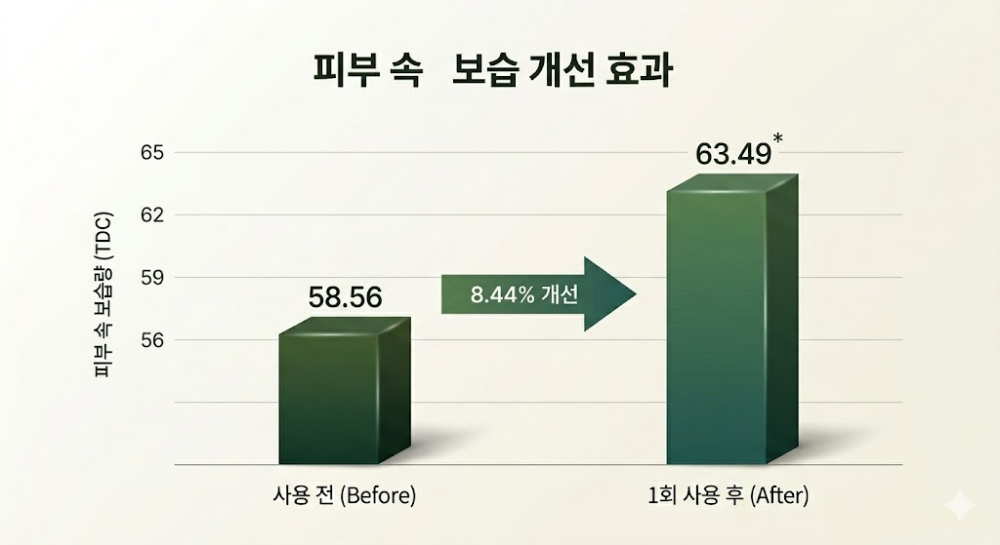
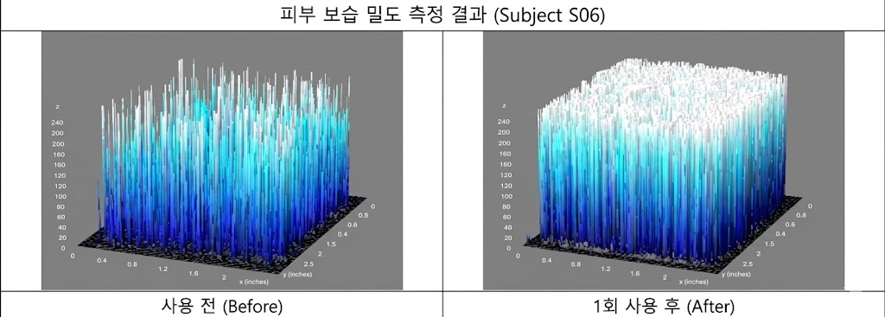

임상으로 입증된 보습 효과
선진임상연구센터 · 22명 · IRB 승인

보습 밀도
+0.00%
3D 그래프 ① 이미지 영역

속보습
+0.00%
3D 그래프 ② 이미지 영역

S06 Before / After 3D 비교
12.45 → 43.09
Before/After 3D 비교 이미지 영역 (가로형)
※ 인체적용시험 결과이며 일시적이고 개인차가 있을 수 있습니다.